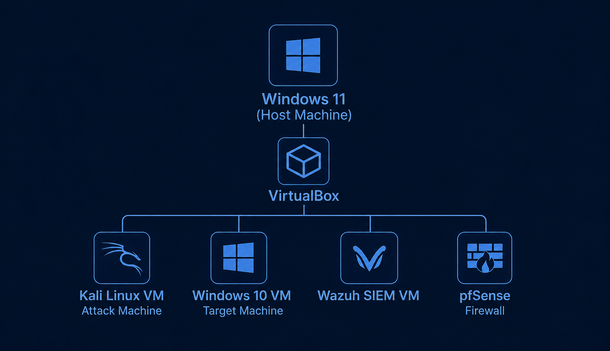

Virtual SOC Knowledge Base
Virtual SOC Home Lab with Wazuh SIEM, Kali Linux/Windows 10 VMs & pfSense deployed on Windows 11 Laptop
Structured SOC environment for detection engineering, endpoint monitoring, and controlled attack simulation.
Infrastructure Overview
Kali Linux (Pentest Machine)
Windows 10 (Endpoint)
Ubuntu + Wazuh SIEM (System Monitor)
pfSense Firewall (Security Policy Management)
SOC Network Topology
Logical representation of attacker, endpoint, SIEM, and firewall segmentation.

Deployment Stages
Phase 1
VirtualBox Setup
Phase 2
Kali Linux Deployment
Phase 3
Windows 10 Endpoint
Phase 4
Ubuntu + Wazuh SIEM
Phase 5
pfSense Firewall Integration
Network segmentation, routing control, and isolation between attack, endpoint, and monitoring layers.